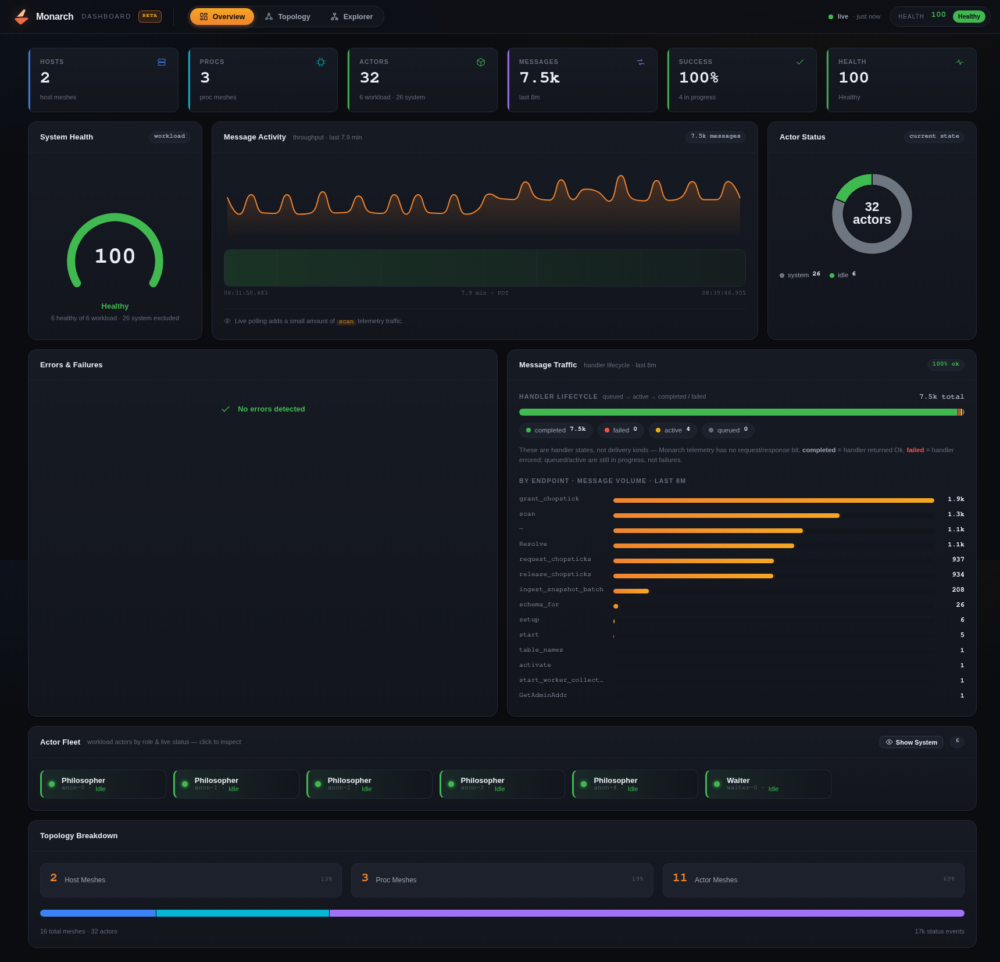
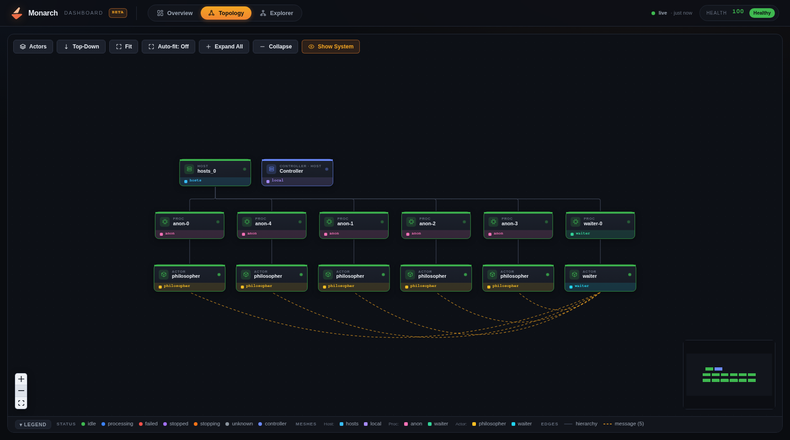
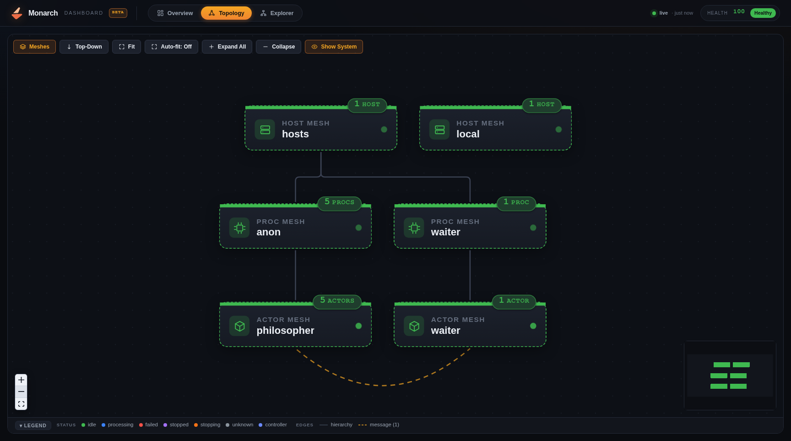
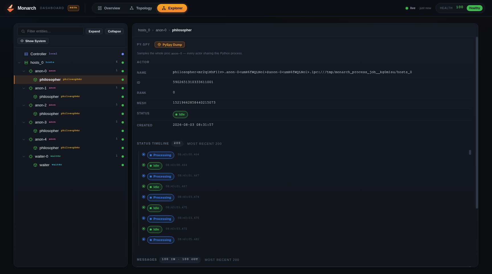

Monarch Dashboard#
The Monarch Dashboard is a web-based GUI for monitoring Monarch actor systems in real time. It connects to the distributed telemetry system and renders the full mesh topology — hosts, processes, actor meshes, and individual actors — across three tabs: Overview for live metrics and message traffic, Topology for an interactive job graph, and Explorer for drilling into a single entity.
See the observability overview for how the dashboard uses distributed telemetry and complements the Mesh Admin TUI.
Note — The Monarch Dashboard is in early development and may change significantly between releases.
The dashboard is included in the torchmonarch PyPI package. The telemetry
sidecar hosts its query service. Set
TelemetryConfig(include_dashboard=True) to advertise the browser UI and print
its URL.
Quick Start#
Start any Monarch application that enables telemetry. The
Dining Philosophers
example is the easiest way to try it — five philosopher actors share chopsticks
around a table, mediated by a waiter actor that prevents deadlock. The
Airport Turnaround
example is a busier alternative — a fleet of flights cycles through turnaround
phases while contending for a small pool of gates, runways, fuel trucks, and
baggage crews. Both accept --dashboard.
Terminal 1 — start the example with the dashboard enabled:
python python/examples/dining_philosophers.py --dashboard
The example prints the dashboard URL on startup:
Monarch Dashboard: http://localhost:8265
Open http://localhost:8265 in your browser.
Overview#
The default tab summarizes the whole job. The header persists across tabs, carrying the tab switcher, a freshness indicator for the live poll, and an overall health chip.


The tab is organized into panels:
Metric cards — host meshes, proc meshes, actors (split into workload and system), messages over the retention window, handler success rate, and the health score.
System Health — a gauge scoring the workload actors. System actors are excluded, and the caption reports how many.
Message Activity — throughput across the retention window, annotated with the sampled time range. Viewing the dashboard itself adds a little
scantraffic, which the panel notes.Actor Status — a donut of the current state of every actor, with a legend per status.
Errors & Failures — failed and stopped actors with their reasons, or a clean bill of health.
Message Traffic — the handler lifecycle (queued → active → completed / failed) and a ranked list of message volume by endpoint. These are handler states, not delivery kinds.
Actor Fleet — one chip per workload actor showing its role, proc, and live status; click a chip to inspect it. Toggle Show System to include system actors.
Topology Breakdown — counts and proportions of host, proc, and actor meshes.
Topology#
The Topology tab renders the job as an interactive directed graph. Solid edges are the mesh hierarchy; dashed edges are message flow between actors, rolled up to whichever nodes are currently visible.
Two view modes trade detail against legibility. Switch between them with the leftmost toolbar button.
Actors view#
One node per entity — host, proc, and actor — each tagged with its mesh. Use this to follow individual actors and see which of them talk to each other.
Host → Proc → Actor


Meshes view#
Each host, proc, and actor mesh collapses to a single node carrying its member count. This keeps larger and more complex jobs clear: rather than hundreds of individual actors, the graph shows only the meshes and the relationships between them.


Both modes share the same controls:
Expand All and Collapse open or close every level. A collapsed node reports how many descendants it hides.
Show System brings in the system actors, which are hidden by default.
Top-Down and Left-Right flip the layout direction; Fit frames the graph. Auto-fit re-frames on a structural change but never on a live refresh, so it leaves a manual zoom alone.
Pan by dragging the canvas, and zoom with the scroll wheel, the zoom buttons, or the minimap.
Hover a node for its name, type, status, mesh, and reference. Click an actor to open its detail drawer; clicking a node that has children expands or collapses it instead.
Nodes are colored by status. The legend keys those colors, the mesh colors, and the two kinds of edge.
Explorer#
The Explorer pairs a hierarchy tree with a detail pane. Filter the tree by name, expand or collapse every level, and toggle Show System to include system actors.


Controller (the client host)
Host
└─ Proc
└─ Actor
Every row is tagged with its mesh and carries a status dot. Hosts and procs also report how many actors sit below them.
Entity detail#
Selecting a host or proc reports its name, mesh, status, direct child count, the number of actors below it, and its reference, followed by a rollup of the statuses below it and a list of its children.
Actor detail#
Selecting an actor shows a breadcrumb of its ancestors and four sections:
Py-spy — capture a live stack trace. Sampling is proc-level, so a dump covers every actor sharing that Python process.
Actor info — full name, ID, rank, mesh, current status, and creation timestamp.
Status timeline — the most recent status transitions, with timestamps.
Messages — incoming and outgoing messages with peer, endpoint, and status. Click a row to expand its status event history.
Programmatic Usage#
Here is an example of how to enable the dashboard on your job via the Jobs API.
from monarch.job import ProcessJob, TelemetryConfig
job = ProcessJob({"workers": 2}).enable_telemetry(
TelemetryConfig(include_dashboard=True, dashboard_port=8265)
)
state = job.state(cached_path=None)
print(state.dashboard_url)
enable_telemetry() also starts mesh admin and periodic introspection
snapshots. Use state.query_engine_client to query the same data directly; see
Distributed Telemetry.